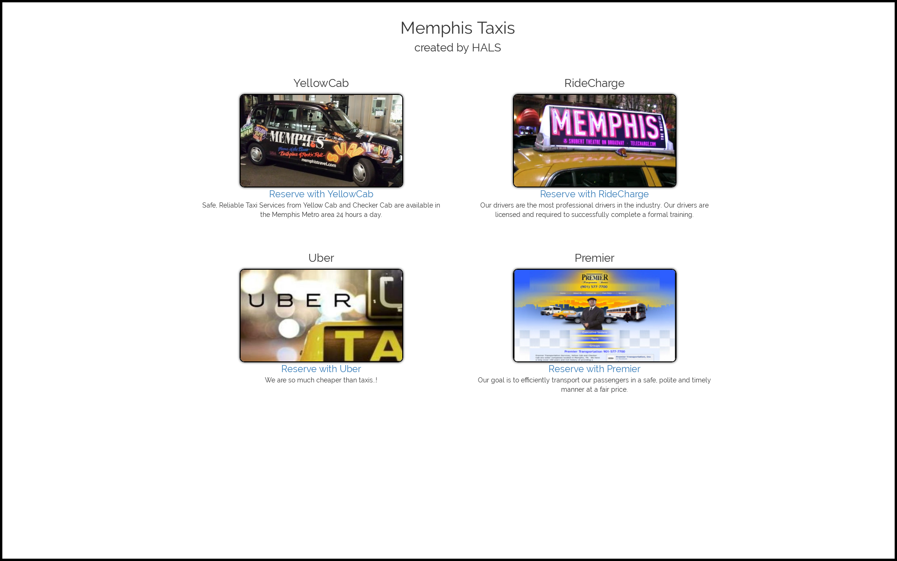
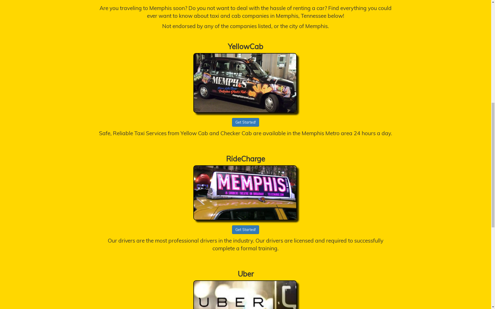
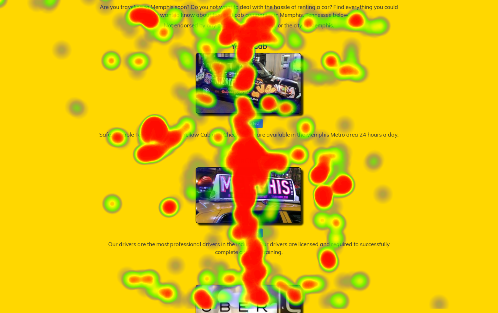
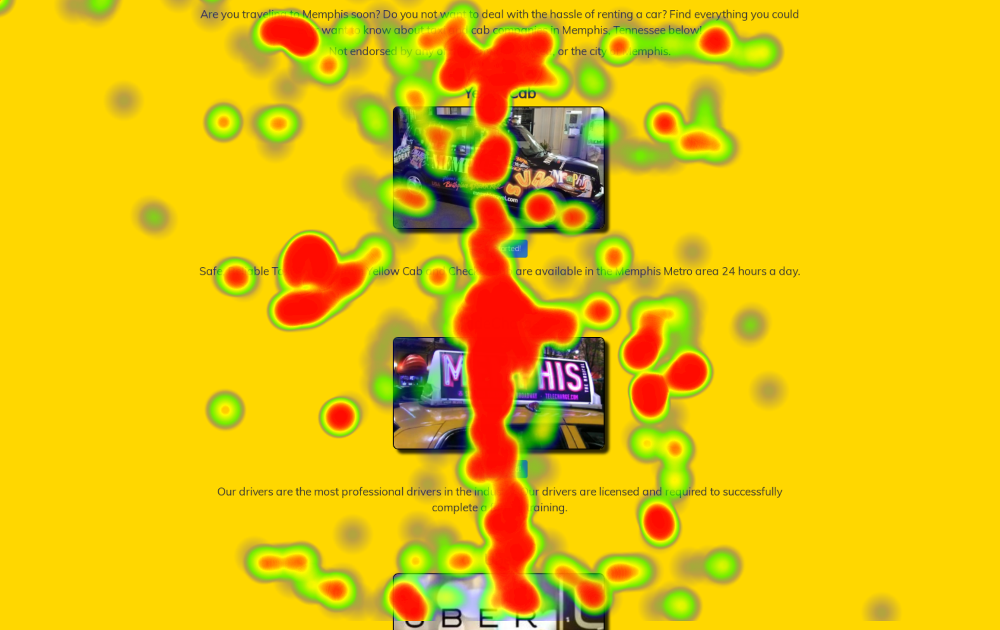

LENA RENSHAW
Brown University Computer Science '20
A/B Testing and Project
User Testing
As class project, I performed two user interaction tests on two versions of a website: an A/B test and an eye tracking test. View the sites here.
Note: the link randomizes which website version is shown, so reload the page a few times to see both.
I worked with a group of four to create two versions of a website for an imaginary Memphis Taxi company, using HTML/CSS. The two versions are shown below, with version A (left) being minimalist and compact, and version B being flashy and colorful.
 We asked classmates to browse both versions of the page as if they were users, collecting data to perform chi-squared tests on click-through rate and return rate, as well as t-tests on time to click and dwell time. All statistical tests found that there was no significant difference between Version A and Version B, except for in time to click. The time to click on Version B is significantly greater than on Version A.
Eye Tracking
We then performed eye tracking tests, then wrote functions in JavaScript to read the data from the camera. We produced two types of displays from this data: a step-by-step replay of the user's gaze (above) and a heatmap.


 

Conclusions
Analysis of both types of tests suggested that this fictional Memphis Taxi Company should use Version B as a starting point for the design of their website. Version B had a significantly longer time to click than Version A, which means users stay on the page longer, allowing the company to make more money through ads. Additionally, the eye tracking data suggests that Version B is easer for users to focus on, as the content is centered vertically. Users can focus their gaze on the vertical center of the page and scroll for more content, rather than shifting their gaze around the page.
This project allowed me to gain insight into and experience with these two types of user interaction tests. I learned that eye tracking can provide a concrete view into how some users might interact with the page, while A/B tesing allows us to gather more data about many users at once. It is probably beneficial to perform eye tracking tests in the preliminary stages of testing to understand how individual users might interact with the page, then move onto A/B testing when we need to better understand the consumer base as a whole.
previous/next


© Lena Renshaw 2017